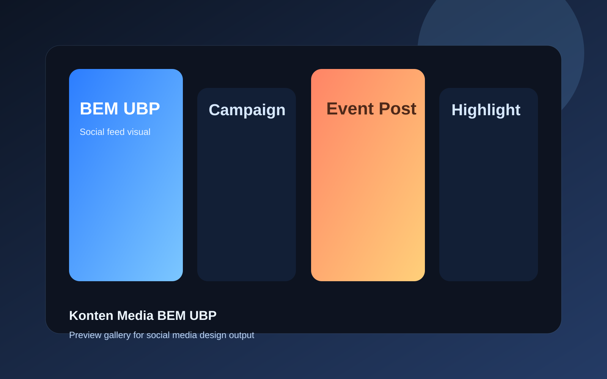
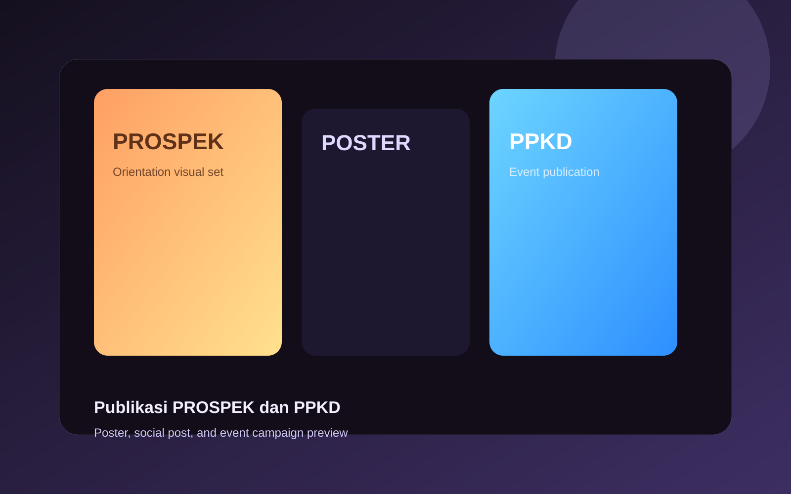
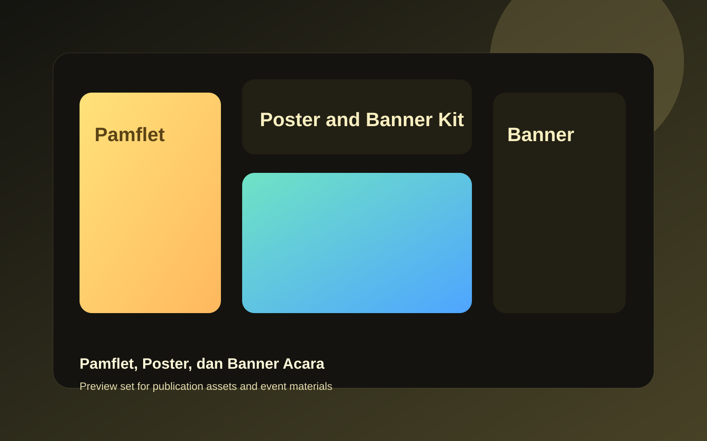

SELAMAT DATANG
10+
Website dan sistem yang pernah saya kerjakan
10+
Peran publikasi, media, dan dokumentasi organisasi
3+
Prestasi Akademik dan Non-Akademik
Graphic Design & Web Developer
Fokus pada website, WordPress, frontend development, dan UI/UX untuk kebutuhan kampus, organisasi, bisnis, dan project digital.
Mahasiswa S1 Ilmu Komputer semester 8 di Universitas Putra Bangsa yang terbiasa mengerjakan desain visual, website company profile, dan kebutuhan digital dengan pendekatan yang clean dan mudah dipahami.
Profile Snapshot
Based in Kebumen, Jawa Tengah
Dana Riyadi
Saya terbiasa mengerjakan website kampus, company profile, sistem berbasis web, konten media sosial, poster, banner, dokumentasi foto video, dan UI sederhana dengan pendekatan visual yang clean dan mudah dipahami.
Current Focus
Graphic Design, Web Development, UI/UX
Main Tools
Figma, Canva, CorelDRAW, WordPress
Types of Work
Website kampus, company profile, publikasi acara, social media content, dan dokumentasi multimedia
Website yang relevan
Saya sudah membuat website untuk wisata, kampus, company profile, edukasi, dan kebutuhan organisasi.
Desain publikasi aktif
Terbiasa membuat feed Instagram, poster, banner, dan materi desain untuk promosi program kerja dan acara.
Multimedia dan dokumentasi
Saya juga menangani foto, video, serta operator multimedia saat pelaksanaan event dan kegiatan kampus.
About Me
Berangkat dari project kampus, organisasi, dan kebutuhan visual yang nyata.
Saya memiliki ketertarikan kuat pada desain grafis dan web development. Selain mempelajari HTML, CSS, PHP, Python, C++, dan Java, saya juga sudah memiliki pengalaman membuat website, desain grafis, serta desain UI/UX. Setiap project saya kerjakan dengan pendekatan yang clean, komunikatif, dan mudah digunakan agar hasil akhirnya benar-benar siap dipakai.
Pendidikan
Program Studi S1 Ilmu Komputer di Universitas Putra Bangsa, Kebumen, Jawa Tengah. Saat ini berada di semester 8.
Pencapaian
- Juara 1 Lomba Fotografi Dies Natalis Universitas Putra Bangsa 2023.
- Juara 3 Lomba Tes Wawasan Kebangsaan Universitas Putra Bangsa Festival 2023.
- Juara 2 Pemilihan Mahasiswa Berprestasi Universitas Putra Bangsa 2025.
- Peraih Golden Ticket Awardee dan penerima International STEM Endorsed Certificate.
Skills & Tools
Kemampuan yang paling sering saya pakai di project.
Kombinasi desain, multimedia, dan web development membuat workflow saya lebih lengkap dari tahap konsep visual sampai implementasi website.
Web Development
Mengerjakan website kampus, wisata, company profile, dan sistem berbasis WordPress maupun Laravel.
Graphic Design
Membuat feed Instagram, poster, banner, materi promosi, dan visual event yang rapi dan komunikatif.
UI/UX & Multimedia
Menyusun tampilan antarmuka sederhana, editing video, dan dokumentasi foto video untuk kebutuhan acara.
Software dan tools
Selected Works
Karya pilihan yang paling mewakili hasil kerja saya.
Saya menampilkan karya terbaik terlebih dahulu agar portfolio tetap fokus, cepat dipahami, dan tetap nyaman dilihat meskipun pengalaman project saya cukup banyak.
Section ini berisi karya pilihan dari project website, WordPress, UI/UX, dan desain publikasi. Project lain tetap bisa ditunjukkan saat dibutuhkan, jadi halaman utama tetap rapi tanpa terasa penuh.
 UI/UX Preview
UI/UX Preview
Sistem Tiket Wisata Kebumen
Membuat desain UI/UX website pembelian tiket online wisata di Kebumen sebagai project pengembangan web.
 Website Preview
Website Preview
Portal Wisata Pantai Menganti
Membuat website informasi terkini Pantai Menganti Kebumen untuk menyajikan informasi wisata secara lebih jelas.
 Laravel App
Laravel App
Manajemen Rapat BEM UBP
Membangun aplikasi manajemen rapat BEM UBP berbasis website menggunakan framework Laravel.
 WordPress Site
WordPress Site
Zaza Bakery Company Profile
Membuat website company profile toko roti Zaza Bakery berbasis WordPress untuk kebutuhan promosi bisnis.
 Internship Build
Internship Build
Website LP3M, FST, dan FEB
Saat internship, saya membuat website LP3M, Fakultas Sains dan Teknologi, serta Fakultas Ekonomi dan Bisnis berbasis WordPress.
 Education Site
Education Site
Daycare with Education
Membuat website Daycare with Education saat mengikuti Studi Independen Bersertifikat di PT Maleo Edukasi Teknologi.

Design SeriesKonten Media BEM UBP
Membuat desain untuk program kerja BEM, mengelola feed Instagram, serta mengupdate website resmi BEM.

Event VisualPublikasi PROSPEK dan PPKD
Mengerjakan desain acara, konten sosial media, serta dokumentasi pada kegiatan Pengenalan Kampus dan pekan raya orientasi studi.

Publication KitPamflet, Poster, dan Banner Acara
Membuat materi publikasi seperti pamflet, poster, dan banner untuk Bedah Kampus, UKM English Club, dan kegiatan kampus lainnya.
Experience
Pengalaman yang membentuk arah kerja saya.
Dari internship, studi independen, sampai organisasi kampus, pengalaman saya banyak bergerak di area website, publikasi visual, dan operasional media digital.
Web Developer
Universitas Putra Bangsa
- Merancang sistem penilaian kinerja karyawan.
- Membuat website LP3M berbasis WordPress.
- Membuat website Fakultas Sains dan Teknologi berbasis WordPress.
- Membuat website Fakultas Ekonomi dan Bisnis berbasis WordPress.
Platform and Web Developer
PT Maleo Edukasi Teknologi
- Mempelajari pembuatan platform edukasi.
- Membuat website Daycare with Education.
- Peraih Golden Ticket Awardee, 10 mahasiswa terbaik.
- Menerima International STEM Endorsed Certificate.
Kepala Departemen Media dan Informasi
Badan Eksekutif Mahasiswa - Universitas Putra Bangsa
- Membuat semua desain yang berkaitan dengan program kerja BEM.
- Mengelola akun Instagram resmi BEM dan memposting konten.
- Mengelola website resmi BEM serta mengupdate konten website.
- Menjadi fotografer, videografer, dan koordinator kebutuhan media.
Divisi Publikasi, Desain, dan Dokumentasi
PROSPEK, UKM English Club, dan Bedah Kampus
- Membuat desain acara seperti pamflet, poster, banner, dan feed sosial media.
- Menjadi operator multimedia saat acara berlangsung.
- Menjadi fotografer dan videografer untuk dokumentasi kegiatan.
- Mengelola akun Instagram dan kebutuhan publikasi digital organisasi.
Contact
Siap untuk project desain, website, atau kolaborasi digital.
Saya terbuka untuk kolaborasi pada website company profile, landing page, desain publikasi, konten media sosial, dan kebutuhan visual digital lainnya dengan tampilan yang rapi dan fungsional.
Quick Profile
- Mahasiswa S1 Ilmu Komputer semester 8 di Universitas Putra Bangsa.
- Terbiasa mengerjakan website, desain promosi, dan dokumentasi multimedia.
- Fokus pada WordPress, UI/UX, graphic design, dan frontend dasar.